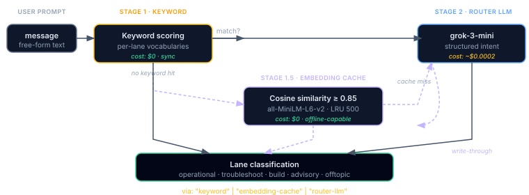

Forge-Master
A read-only reasoning orchestrator with its own dashboard tab. Classifies intent, pulls OpenBrain memory, and chains read-only forge tools on your behalf, so you can ask open-ended questions instead of wiring tool calls by hand.
Why a Reasoning Orchestrator?
Plan Forge has 90 MCP tools. Most of the time you know which one you need. But sometimes you don't, sometimes the question is open-ended:
- "Why did Phase-27 Slice 4 fail?" → needs
forge_watch_live+brain_recall+forge_bug_list - "Pick up the thread from yesterday's auth work" → needs memory recall +
forge_status+forge_plan_status - "Should we add caching to the user lookup?" → needs
forge_search+brain_recallfor prior decisions + maybeforge_diagnose
Chaining the right tools by hand is slow and easy to get wrong. Forge-Master is the front door: one prompt in, one synthesized answer out. Behind the scenes it classifies your intent, pulls relevant memory, and orchestrates whatever read-only tools fit.
.forge.json, or finalize a smelt. That guarantee is what makes it safe to ask anything at any time. When the answer requires a write, Forge-Master tells you the exact tool to call yourself.
Three Access Surfaces
| Surface | Best for | Where |
|---|---|---|
| Studio tab | Interactive exploration with prompt gallery, streaming chat, live tool-call trace | localhost:3100/dashboard → Studio |
forge_master_ask MCP tool | Agents that want one-shot reasoning embedded in a larger conversation | Any MCP-compatible client (Copilot, Claude Code, Cursor, Codex, Windsurf) |
pforge forge-master status|logs | Scripts, CI checks, health probes | CLI |
The forge_master_ask tool
The MCP tool is a one-shot entry-point:
forge_master_ask {
message: "Why did Phase-27 Slice 4 fail?"
}
→ {
ok: true,
lane: "troubleshoot",
via: "router-llm", // or "keyword" / "embedding-cache"
toolCalls: [
{ name: "forge_watch_live", args: { phase: "27", slice: 4 } },
{ name: "brain_recall", args: { query: "Phase-27 slice 4 failures" } }
],
reply: "The slice failed because…",
costUSD: 0.0023
}forge_master_ask over manually calling individual forge tools when the task is open-ended or involves multiple steps. Don't use it for direct file edits, Forge-Master is read-only."
Three-Stage Intent Classifier
Every prompt is classified into a lane before tools are dispatched. The classifier runs three stages in order, falling through only when the prior stage didn't match confidently. This keeps the common case free (keyword) and the edge case smart (router LLM).

Fast regex/keyword match against per-lane vocabularies. Zero API cost. Returns immediately if confidence is high. Covers the bulk of operational prompts ("open bugs", "failing gate", "scope contract violation", etc.).
Cosine-similarity match (≥ 0.85) against previously-classified prompts. Zero API cost on hit. Uses all-MiniLM-L6-v2 via @xenova/transformers (lazy-loaded peer dep), or a deterministic hash bag-of-words fallback when the package isn't installed. Works fully offline once warm.
Default model: grok-3-mini. Used for ambiguous prompts the cache hasn't seen. Every successful classification is then written through to the cache, so the next similar prompt skips this stage entirely.
Each successful turn carries a via field telling you which stage answered: "keyword", "embedding-cache", or "router-llm". The dashboard's Forge-Master tab summarizes the distribution as {keyword, embedding, router} percentages.
The Lanes
Forge-Master classifies into one of these lanes. Each lane has a different default tool allowlist:
| Lane | Use case | Quorum-eligible? |
|---|---|---|
operational | Status queries, run lookups, "what's happening", reads runs, plan status, costs | No (hard-blocked) |
troubleshoot | Failure diagnosis, reads logs, watch-live, bugs, traces | No (hard-blocked) |
build | "How would I build X", reads patterns, runbooks, prior plans | No (hard-blocked) |
advisory | Open-ended judgment calls, "should we…", "which approach…", "what's the trade-off…" | Yes (default escalation target for quorum advisory) |
offtopic | Catch-all when nothing else matches; routed to a polite fallback reply | No |
Quorum Advisory Mode v2.78+
For high-stakes decisions in the advisory lane, Forge-Master can fan the prompt out to 2–3 models in parallel and return all replies plus a dissent summary. The human picks the reply, there's no auto-winner selection, because the whole point is to surface disagreement.
pforge run-plan execution. See the side-by-side comparison in Chapter 14 for when to use which.
Activation
Set quorumAdvisory in .forge.json → forgeMaster:
| Mode | When quorum fires |
|---|---|
"off" (default) | Never. Single-model reply only. |
"auto" | Lane is advisory AND prompt was auto-escalated to the high tier AND classifier confidence is medium or above. The conservative trigger. |
"always" | Every advisory-lane prompt fires quorum. Highest spend, highest signal. |
"always", those lanes get a single-model reply. Quorum is for judgment, not for lookups.
Cost preview before dispatch
Before any model is called, the GET /api/forge-master/chat/:sessionId/stream endpoint emits a quorum-estimate SSE event with the projected cost. Studio displays this and lets you cancel before spending. Programmatic clients should listen for the event:
data: {"type":"quorum-estimate","models":3,"estimatedUSD":0.0142,"models":[
{"name":"claude-opus-4.7","estUSD":0.0061},
{"name":"gpt-5.3-codex","estUSD":0.0048},
{"name":"grok-4.20","estUSD":0.0033}
]}
Dissent extraction
After all replies arrive, Forge-Master runs a keyword-frequency divergence analysis across the reply texts and emits a dissent: { topic, axis } summary. Topic is what the models disagreed about; axis is the dimension of disagreement (timing, scope, model choice, etc.). The dashboard renders this as a one-line summary above the three replies so you can see the disagreement before reading.
Partial failure
Quorum dispatch uses Promise.allSettled with a 60s hard timeout per model. If 1 of 3 fails or times out, the remaining replies are returned with a partial: true flag. If all fail, the response is { ok: false, code: "QUORUM_ALL_FAILED" }.
REST API + MCP Tool
| Method | Endpoint / tool | Description |
|---|---|---|
| MCP tool | forge_master_ask | One-shot reasoning. Accepts { message, sessionId? }; returns lane, via, toolCalls[], reply, costUSD. |
| POST | /api/forge-master/chat | Start a chat session (or continue an existing one with sessionId). Returns { sessionId, ... }. Pair with the SSE stream below to receive incremental tokens. |
| GET | /api/forge-master/chat/:sessionId/stream | Server-Sent Events stream for the session. Emits classification, quorum-estimate (if advisory triggers), tool-call, tool-result, delta (token chunks), done. |
| POST | /api/forge-master/chat/:sessionId/approve | Resolve a pending approval prompt mid-stream (used by quorum-estimate cancel, gated tool calls). |
| GET | /api/forge-master/session/:sessionId | Last ~10 turns for the session, for transcript replay. |
| GET | /api/forge-master/sessions | Recent sessions list. |
| GET | /api/forge-master/prompts | Prompt catalog used by the Studio sidebar. |
| GET | /api/forge-master/capabilities | Server capabilities snapshot (models, tier, advisory mode). |
| GET | /api/forge-master/cache-stats | Embedding cache liveliness: { size, hitRate, maxSize: 500 }. Use as a health probe. |
| GET / PUT | /api/forge-master/prefs | Read / write per-project Forge-Master preferences. Schema: { tier, autoEscalate, quorumAdvisory, embeddingFallback }. GET returns current values; PUT writes to .forge/fm-prefs.json. |
Configuration
Forge-Master config lives under forgeMaster in .forge.json. All fields are optional, sensible defaults apply:
{
"forgeMaster": {
"reasoningModel": "claude-opus-4.6", // model used for replies in advisory lane
"routerModel": "grok-3-mini", // model used by stage-2 intent classifier
"quorumAdvisory": "auto", // "off" | "auto" | "always"
"embeddingFallback": true, // enable stage 1.5 embedding cache
"discoverExtensionTools": true, // allow extension-supplied tools to register
"providers": {
"githubCopilot": { "model": "gpt-4o" } // GitHub Models override (zero-key path)
}
}
}| Field | Default | What it controls |
|---|---|---|
reasoningModel | model.default (or gpt-4o-mini) | Model used to compose replies in advisory lane. Falls back to .forge.json's top-level model.default. |
routerModel | grok-3-mini | Stage-2 intent classifier model. Cheap by design, it's classifying, not reasoning. |
quorumAdvisory | "off" | Enables Quorum Advisory Mode in the advisory lane. |
embeddingFallback | true | Enables the stage 1.5 embedding cache. Disable to force every cache-miss to the router LLM. |
discoverExtensionTools | true | Allow extensions in extensions/ to register tools that Forge-Master can call. |
providers.githubCopilot.model | gpt-4o-mini | Model used when routing through GitHub Models (zero-key path with gh auth login). |
Zero-key setup
The recommended setup path requires no API keys: run gh auth login once and Forge-Master auto-detects your GitHub token, then routes through GitHub Models. GitHub Copilot subscribers get this for free.
Set ANTHROPIC_API_KEY, OPENAI_API_KEY, or XAI_API_KEY only if you want to override the default with a premium model directly. The dashboard Settings → API Keys tab is the GUI equivalent.
Embedding Cache Internals
The stage 1.5 cache is small, opinionated, and zero-config:
- Persistence:
.forge/fm-sessions/embedding-cache.bin(binary Float32Array) plus a JSON metadata sidecar - Capacity: 500 entries, LRU eviction
- Hit threshold: cosine similarity ≥ 0.85 returns cached classification with
via: "embedding-cache" - Provider:
all-MiniLM-L6-v2via@xenova/transformers(lazy-loaded). When the package isn't installed, the cache uses a deterministic 32-bit hash bag-of-words baseline (hash-bag). Both produce 384-dim vectors that are L2-normalized. - Write-through: every successful router-LLM classification is asynchronously written to the cache
- Liveliness probe:
GET /api/forge-master/cache-statsreturns{ size, hitRate, maxSize: 500 }
embeddingFallback: false in prefs to force every cache-miss to the router LLM. Useful when you're tuning intent vocabularies and want to measure raw stage-2 behavior.
Dashboard Studio Tab
Open localhost:3100/dashboard → Studio. Three panels:
- Prompt gallery, pre-built prompts grouped by intent (operational, troubleshoot, advisory). Click to populate the chat box; edit before sending.
- Streaming chat,
POST /api/forge-master/chatto start, then subscribes toGET /api/forge-master/chat/:sessionId/stream. Shows live classification badge, tool-call trace as each tool fires, and the streaming reply token-by-token. - Embedding cache tile, shows current size, hit rate, and the LRU capacity (500). When the cache is cold, the tile shows a hint that hits will start once you've used Forge-Master a few times.
Forge-Master turns also surface in the unified Timeline tab as fm-turn events (added v2.82). Each turn carries the lane, the user message (truncated to 200 chars), and the turn number, useful for retrospectives.

CLI
| Command | What it does |
|---|---|
pforge forge-master status | Health check: server up, cache loaded, last classification |
pforge forge-master logs [--tail N] | Tail recent turns from .forge/fm-sessions/*.jsonl |
Troubleshooting
- Replies say "I can't help with that" for a question I think is reasonable
- Likely classified as
offtopic. Check theviafield in the response, if it says"keyword", the keyword scorer didn't match. Rephrase using one of the keyword-rich phrasings ("status of …", "why did … fail", "should we …"), or wait untilembedding-cachewarms up. - Quorum advisory never fires even though I set
"auto" - Auto requires all four: lane = advisory, autoEscalated = true, fromTier = high, confidence ≥ medium. Use
"always"to remove the gating during testing, then revert. Note that operational/troubleshoot/build lanes are hard-blocked regardless of mode. - Cache hit rate is stuck at 0%
- Three causes: (1) the cache is fresh and hasn't seen similar prompts yet, give it 10–20 turns; (2)
@xenova/transformersisn't installed and the hash-bag fallback isn't matching well, install the peer dep for better embeddings; (3)embeddingFallback: falsein prefs disables the stage entirely. - "NO_REASONING_MODEL" error
- No reasoning model configured and no API key found. Either run
gh auth login(zero-key path), setANTHROPIC_API_KEY/OPENAI_API_KEY/XAI_API_KEY, or setforgeMaster.reasoningModelin.forge.json. - Router model classifying everything as
offtopic - The router model is too small for your prompt style. Try bumping
routerModelfromgrok-3-minitogrok-4orgpt-4o-mini. The router runs once per prompt, small models are usually fine, but quirky vocabularies sometimes need more capability.
Further Reading
- Chapter 7 — The Dashboard (the Studio tab + Timeline integration)
- Chapter 14 — Advanced Execution (how Quorum Advisory differs from forge_run_plan's quorum modes)
- Chapter 21 — Memory Architecture (how Forge-Master uses OpenBrain for retrieval)
- Chapter 11 — MCP Server Reference, Forge-Master section (REST + tool reference)
- pforge-master package on GitHub (package-level configuration reference)